That anyone walking past would feel joy
I wanted anyone walking past — even for just one second — to feel a spark of joy. A quiet reminder that they are seen. That they are held. And that they belong right here in Madison.
Emily and our seventeen brilliant interns didn’t just meet that goal. They blew it out of the water.
Marina D C Zalewski, at the mural dedication
Under the guidance of local artist Emily Larson Rodriguez at DAMA headquarters, seventeen young people aged 14–17 earned a paid wage ($15/hr) to learn, design, and paint alongside the pros. Together they created a public mural that blossoms, panel by panel, from seed to bloom — so much more than paint. It is about equipping kids with real-world skills, teamwork, and the confidence to make their own corners of the world a little sweeter.
- Where 825 E Johnson St, Madison, Wisconsin
- When Summer 2026, dedicated that autumn
- Who painted it Seventeen young people aged 14–17, paid $15/hr through DAMA’s Youth Apprenticeship Summer Program
- Lead artist Emily Larson Rodriguez, at DAMA headquarters on Allis Ave
- The design Panels reading seed to bloom, with watering cans at both ends pouring inward
A story about a seed
A seed goes into the dirt, and somehow it finds what it needs to grow and to bloom. But that seed was never alone. There was always someone pouring water into the earth — and this summer, the people holding the watering cans were everywhere.
We might not always see who is holding the watering can. But we know they are there. The seed blooms the moment she realizes she belongs.
From a conversation to a wall
It happened in order, over one summer, and almost none of it happened alone.
-
First
A conversation about the vision
We went to DAMA headquarters to talk with the artists about what this wall could be and who it was for — and then got out of their way.
-
Then
Three designs, and a choice
They came back with three. One was chosen, and it became the thing that stands on E Johnson today: panels reading seed to bloom, with watering cans at both ends pouring inward, so growth moves toward the middle.
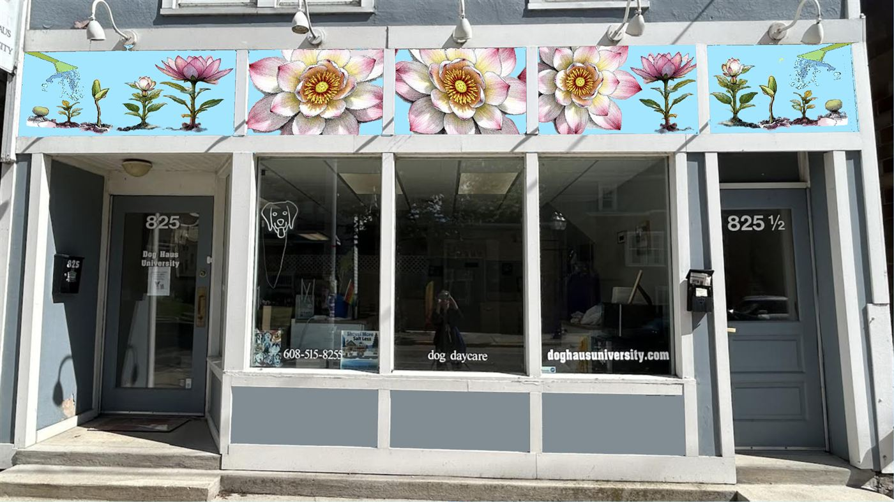
The winning design, mocked up on the building. -
Then
Warner Park, and an open invitation
The blank panels went to Parks Alive at Warner Park, where the neighbourhood was invited to paint the background with us. Anyone who wanted a brush got one. We wore shirts printed with hi in fifteen of the languages spoken across Dane County, so the invitation would reach people before we did.
The back print: hi in fifteen of the languages spoken across Dane County — 안녕하세요, नमस्ते, مرحبا, Salaan, Olá, 你好, Zdravo, ສະບາຍດີ, Bonjour, Xin chào, Hola, ជំរាបសួរ, Nyob zoo, བཀྲ་ཤིས་བདེ་ལེགས། 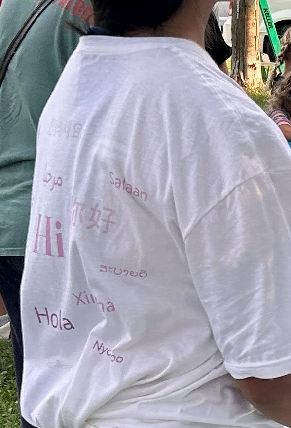
The same shirt, doing its job at Warner Park. 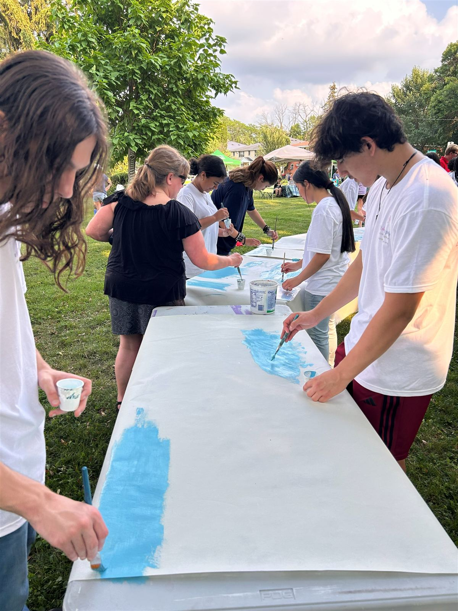
Laying in the sky, one brush at a time. 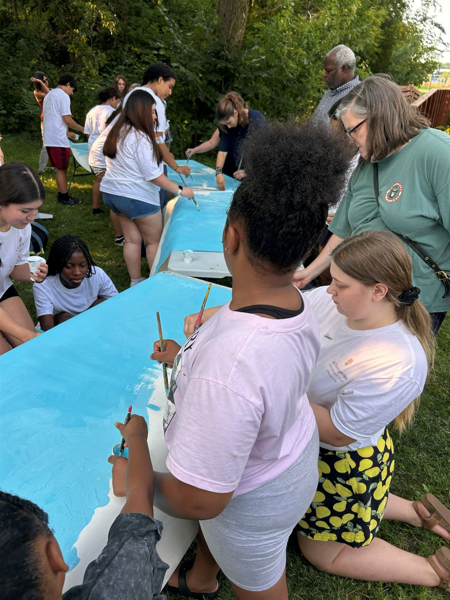
Interns and neighbours, side by side. 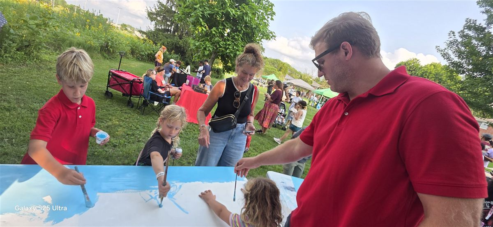
No experience required. 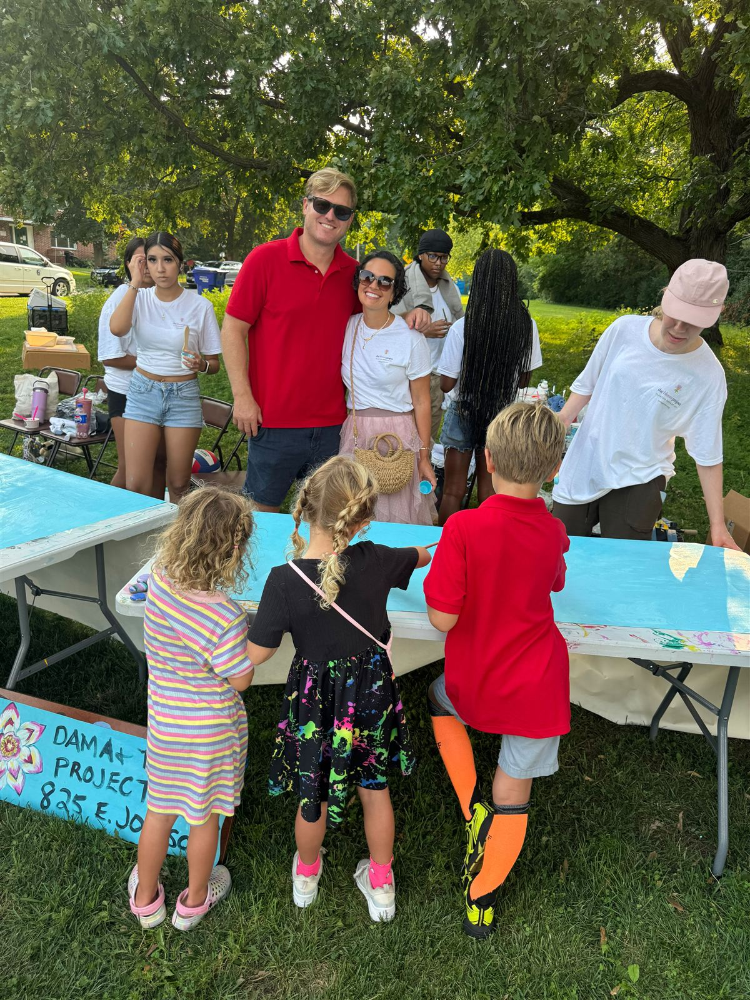
The sign propped at the end of the table, telling people what it was for. 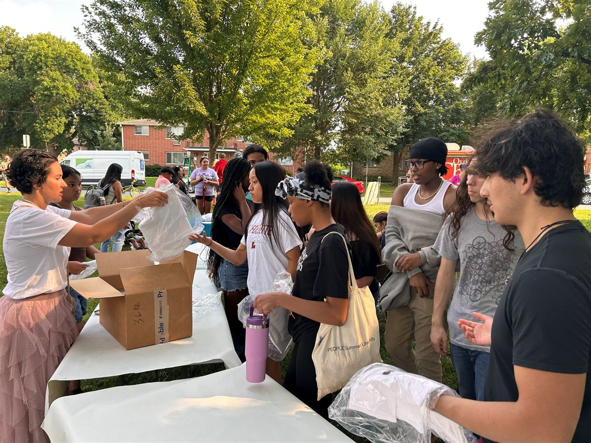
Shirts going out to the crew. -
Then
Finishing at DAMA headquarters
The detail work went back to the studio on Allis Ave — the flowers, the line work, and the hundred small decisions that turn a painted background into a mural.
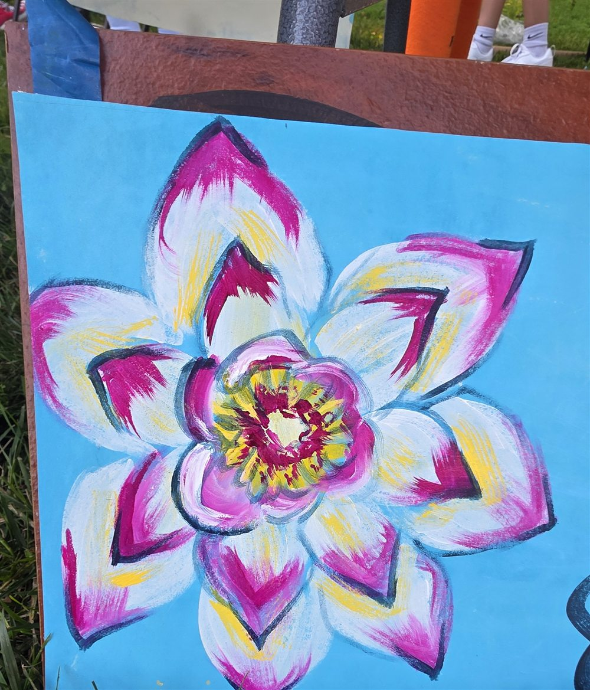
One panel, finished and drying. 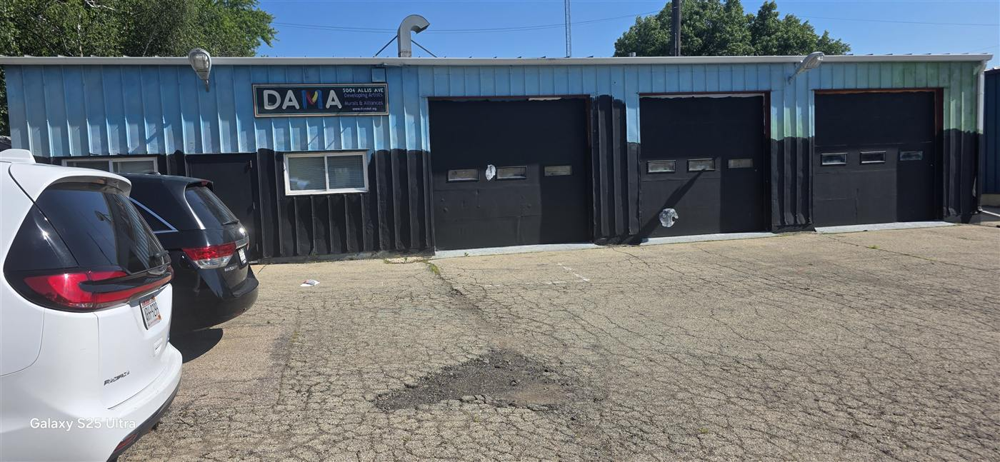
DAMA headquarters on Allis Ave. 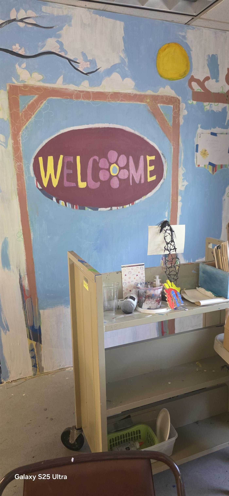
Inside the studio. The welcome on that wall is DAMA’s own. 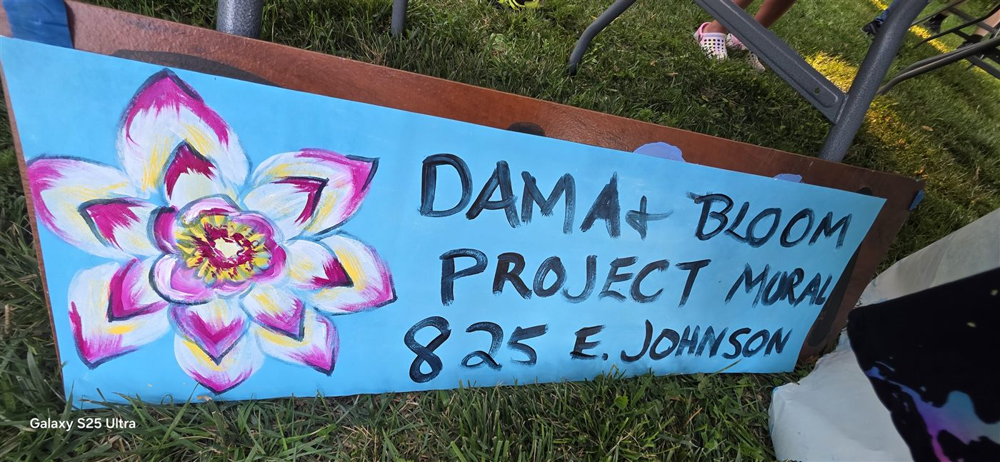
The hand-painted sign that travelled with the project. -
Then
Getting the wall ready
Before anything could go up, the concrete had to be clean. A crew came with pressure washers, and Dog Haus University next door lent us their spigot for the water. Two days of disturbance on their doorstep, and not one complaint.
-
Finally
The wall goes up
Emily Larson Rodriguez and Veronica Figueroa Velez primed the wall and set the mural fabric permanently on E Johnson. That was the moment it stopped being a project and started being part of the street.
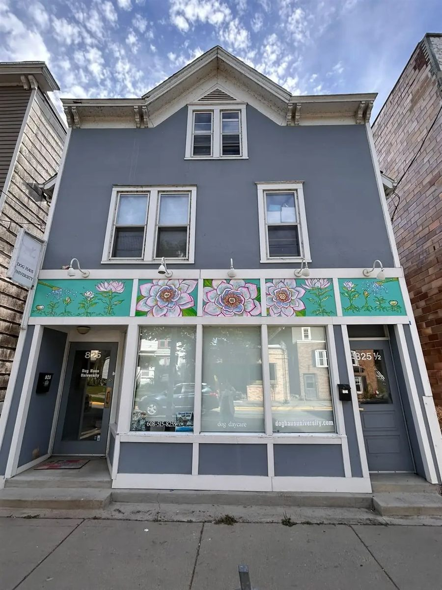
825 E Johnson St, with the mural in place.
The artists
Every person who designed and painted From Seed to Bloom. Names appear exactly as each artist asked to be credited.
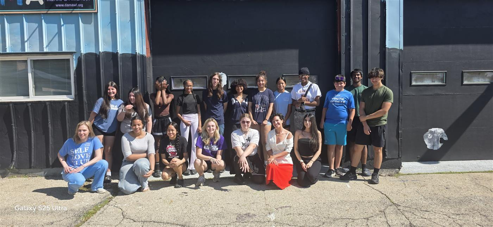
- Airries
- Anlix Rojas
- Dahana W.C.
- Delilah S.
- Genesis Hernandez
- Hannane G.
- Javier M.
- Juan C. Ortiz
- Laurielle B.
- Marlene Tamayo
- Melanie H.
- Oliver Taylor
- Ruth B.
- Sheila T.
- Sofia Garcia
- Teresa Gamón
- Umesh M.
- Demell Glenn
- Jonny Escobar Holguin
- Kylie Anderson
- Emily Larson Rodriguez Lead artist
- Lesli Ann Youth mentor
- Veronica Figueroa Velez
Who held the watering cans
We didn’t do this alone. It took all of us.
A seed is never alone — there is always someone pouring water into the earth. With thanks to DAMA and lead artist Emily Larson Rodriguez; the seventeen artists who painted it; Zaliuski LLC, our donors and our grantors; the crew who pressure-washed the concrete before we started; Dog Haus University next door, who lent us their spigot for the water and put up with two days of disturbance; and everyone who picked up a brush at Warner Park.
Dedicated to every neighbour who calls Madison home.